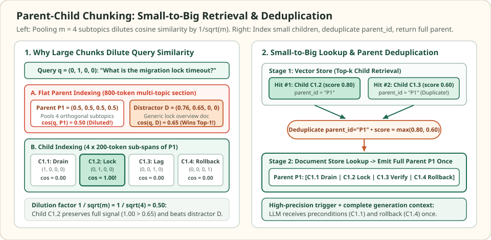

Parent-child and hierarchical chunking: index small spans, return rich context
Every flat chunking pipeline faces a structural tug-of-war between retrieval precision and generation completeness. Embedding a compact 128-token span produces a sharp vector aligned with a single fact, but handing that isolated fragment to an LLM strips away surrounding preconditions, variable definitions, and rollback caveats. Conversely, embedding an 800-token runbook section preserves full context for the generator, but averages multiple subtopics into a diluted vector that loses top-$k$ ranking races against mediocre distractors.
Parent-child (small-to-big) and hierarchical chunking break this trade-off by decoupling the unit of indexing from the unit of generation. Small child chunks live in the vector index for high-precision search, while each child holds a parent_id pointer into a document store that returns the enclosing parent section to the language model.
Why an 800-token parent chunk loses to a mediocre distractor
Four orthogonal subtopics in $\mathbb{R}^4$ · one focused query · $1/\sqrt{m}$ cosine dilution
A production database migration section $P_1$ spans four 200-token child blocks represented by the standard basis vectors in $\mathbb{R}^4$: replica drain $c_{1,1} = e_1$, lock timeout command $c_{1,2} = e_2$, replication lag check $c_{1,3} = e_3$, and rollback steps $c_{1,4} = e_4$. Pooling all four into a single normalized parent vector yields $p_1 = (0.50, 0.50, 0.50, 0.50)$. For query $q = (0, 1, 0, 0)$ asking for the migration lock timeout, $p_1$ scores $\cos(q, p_1) = 0.50$ and loses to a generic distractor $D = (0.76, 0.65, 0, 0)$ at $\cos(q, D) = 0.65$. Indexing the children directly scores $\cos(q, c_{1,2}) = 1.00$ and resolves parent_id = "P1" to return the entire runbook section.


parent_id lookup still delivers the complete 800-token parent $P_1$.Comparing every candidate vector in $\mathbb{R}^4$ against $q = (0, 1, 0, 0)$ shows how small-to-big indexing reverses the ranking error without sacrificing generation context:
Exact unit vectors in R^4, cosine similarity against query q = (0, 1, 0, 0), and payload delivered to the LLM under flat parent indexing vs parent-child indexing.
| Candidate unit & role | Unit vector in $\mathbb{R}^4$ | $\cos(q, \cdot)$ | Rank (flat parent index) | Rank (child index) | Text returned to LLM |
|---|---|---|---|---|---|
| Parent $P_1$ (pooled 800-token section) | $(0.5000, 0.5000, 0.5000, 0.5000)$ | $0.50$ | #2 (Missed at $k=1$) | Not in vector index | Full $P_1$ (if retrieved) |
| Distractor $D$ (generic lock glossary) | $(0.7599, 0.6500, 0.0000, 0.0000)$ | $0.65$ | #1 (False winner) | #2 | Distractor $D$ only |
| Child $c_{1,1}$ (replica traffic drain) | $(1.0000, 0.0000, 0.0000, 0.0000)$ | $0.00$ | — | #3 (tie) | Resolves $\to P_1$ |
| Child $c_{1,2}$ (migration lock timeout) | $(0.0000, 1.0000, 0.0000, 0.0000)$ | $1.00$ | — | #1 (Exact hit!) | Resolves parent_id $\to$ Full $P_1$ |
| Child $c_{1,3}$ (replication lag check) | $(0.0000, 0.0000, 1.0000, 0.0000)$ | $0.00$ | — | #3 (tie) | Resolves $\to P_1$ |
| Child $c_{1,4}$ (rollback procedure) | $(0.0000, 0.0000, 0.0000, 1.0000)$ | $0.00$ | — | #3 (tie) | Resolves $\to P_1$ |
Scroll horizontally to compare the columns. Keyboard: focus the table, then use the left and right arrow keys.
The $1/\sqrt{m}$ embedding dilution law
Suppose a parent passage $P$ decomposes into $m$ approximately orthogonal unit sub-span embeddings $c_1, \dots, c_m \in \mathbb{R}^d$ ($\langle c_i, c_j \rangle = \delta_{ij}$). Under equal-weight mean pooling followed by $L_2$ normalization, the parent embedding $p$ is:
When a user query $q$ aligns with a single sub-span $c_{j^\star}$ ($\langle q, c_{j^\star}\rangle = s_0 > 0$) and is orthogonal to the remaining $m - 1$ background sub-spans ($\langle q, c_j\rangle = 0$ for $j \ne j^\star$), the cosine similarity of the pooled parent vector shrinks by $\sqrt{m}$:
Even when background sub-spans are only weakly correlated rather than strictly orthogonal, packing $m = 4$ to $8$ distinct facts into a single chunk depresses the query dot product enough for single-topic distractors with moderate lexical overlap to outrank the true section.
Parent-child lookup, auto-merging trees, and sentence windows
Three closely related retrieval patterns separate the indexed span from the returned context, differing in how boundaries are defined and how parent nodes are assembled at query time:
| Architecture | Indexed unit (Vector Store) | Returned unit (Doc Store / Metadata) | When to prefer it |
|---|---|---|---|
Two-Level Parent-Child (ParentDocumentRetriever) | Small child chunks ($128\text{–}256$ tokens) with parent_id metadata | Enclosing parent chunk ($512\text{–}1{,}500$ tokens) or structural heading section | Technical runbooks, legal clauses, and API docs where every child belongs to a self-contained section. |
Multi-Level Auto-Merging Tree (AutoMergingRetriever) | Leaf nodes ($128$ tokens) at depth $\ell$ of a chunk hierarchy ($2{,}048 \to 512 \to 128$) | Replaces sibling leaves with their parent node whenever $\ge \theta$ fraction of children hit in top-$k$ | Long specifications where narrow queries need a single leaf, while broad queries match multiple siblings and should merge upward. |
Sentence-Window Expansion (SentenceWindowNodeParser) | Single sentence $s_i$ embedded in isolation | Sliding window $s_{i-w}\dots s_{i+w}$ (typically $w = 2$ or $3$) stored in the node's metadata | Dense factual prose without clean section headers where fixed parent boundaries could still split a local paragraph in two. |
Parent deduplication and token-budget packing
Because multiple child chunks share the same parent_id, a top-$k$ vector search frequently retrieves two or more children from the same parent section. For example, a compound query $q_{\text{comp}} = (0.0, 0.8, 0.6, 0.0)$ asking about both the migration lock timeout ($c_{1,2}$) and the replication lag check ($c_{1,3}$) retrieves both children in top-$k$. Naively replacing each child hit with its parent would paste two identical 800-token copies of $P_1$ into the prompt, wasting context tokens and biasing attention.
To assemble a clean, non-redundant prompt within a generation token budget $B$, the retriever aggregates child scores per unique parent $P$ using the maximum child score (or a boosted multi-hit score) and packs unique parents greedily in descending order:
import numpy as np
# Parent store: full multi-paragraph sections returned to the LLM
parent_store = {
"P1": (
"[Drain] Drain read replica traffic. "
"[Lock] Run ALTER TABLE with lock_timeout = 2000ms. "
"[Verify] Confirm replication lag stays below 100ms. "
"[Rollback] Drop shadow trigger and restore routing."
),
"P_distractor": "General database glossary: locks serialize concurrent writes.",
}
# Child vector index: (child_id, parent_id, unit_vector)
children = [
("C1.1", "P1", np.array([1.0, 0.0, 0.0, 0.0])),
("C1.2", "P1", np.array([0.0, 1.0, 0.0, 0.0])),
("C1.3", "P1", np.array([0.0, 0.0, 1.0, 0.0])),
("C1.4", "P1", np.array([0.0, 0.0, 0.0, 1.0])),
("D1", "P_distractor", np.array([0.7599, 0.6500, 0.0, 0.0])),
]
# Verify embedding dilution on pooled parent P1 vs focused query q
q = np.array([0.0, 1.0, 0.0, 0.0])
p1_raw = sum(vec for _, pid, vec in children if pid == "P1") / 4.0
p1_unit = p1_raw / np.linalg.norm(p1_raw)
assert round(float(np.dot(q, p1_unit)), 2) == 0.50
assert round(float(np.dot(q, children[4][2])), 2) == 0.65 # Distractor beats pooled P1!
def retrieve_deduplicated_parents(query, top_k_children=3, max_parents=2):
scored_children = [
(round(float(np.dot(query, vec)), 4), cid, pid)
for cid, pid, vec in children
]
scored_children.sort(reverse=True)
top_hits = scored_children[:top_k_children]
# Deduplicate by parent_id while keeping the highest child similarity score
parent_scores = {}
matched_children = {}
for score, cid, pid in top_hits:
if pid not in parent_scores or score > parent_scores[pid]:
parent_scores[pid] = score
matched_children.setdefault(pid, []).append(cid)
ranked_parents = sorted(parent_scores.items(), key=lambda x: x[1], reverse=True)
return [
(pid, score, matched_children[pid], parent_store[pid])
for pid, score in ranked_parents[:max_parents]
]
# 1. Single-fact query q = (0, 1, 0, 0): Child C1.2 wins with 1.00 -> returns P1
res_single = retrieve_deduplicated_parents(q, top_k_children=2)
assert res_single[0][0] == "P1" and res_single[0][1] == 1.0
# 2. Compound query q_comp = (0, 0.8, 0.6, 0): both C1.2 (0.80) and C1.3 (0.60) hit,
# but P1 is deduplicated and emitted once with score max(0.80, 0.60) = 0.80.
q_comp = np.array([0.0, 0.8, 0.6, 0.0])
res_comp = retrieve_deduplicated_parents(q_comp, top_k_children=3)
assert res_comp[0][0] == "P1"
assert res_comp[0][1] == 0.80
assert res_comp[0][2] == ["C1.2", "C1.3"]
print("Single query top parent:", res_single[0][:3])
print("Compound query deduplicated parent:", res_comp[0][:3])Check the operating assumptions
Why not simply increase top-k on a flat child-only index instead of fetching parent chunks?
Increasing top-k only retrieves other fragments that also have high cosine similarity to the query. Crucial context such as a safety precondition ("Drain read replica traffic first") or a rollback clause often shares zero query keywords and sits at cos(q, c) = 0.00; child-only search will never surface those adjacent blocks regardless of reasonable k, whereas parent lookup guarantees the surrounding procedural block arrives intact.
Does parent-child chunking increase the vector index memory footprint compared to flat child chunking?
No. Only the small child chunks are embedded and stored in the vector index (such as HNSW or IVF). The larger parent chunks are stored unembedded as plain UTF-8 text in a key-value or document store indexed by parent_id, which is orders of magnitude cheaper per document than high-dimensional float32 vectors.
When should top-k child retrieval over-fetch (for example, k_child = 20 when you need 4 parent sections)?
Whenever a single parent section contains several closely related child chunks. If four of the top-5 child hits belong to the same parent P1, deduplication collapses those four hits into a single parent. Over-fetching k_child = 3 * k_parent to 5 * k_parent ensures that enough distinct parent_id values survive deduplication to fill the desired parent budget.
Sources
- LangChain Documentation: ParentDocumentRetriever, decoupling child vector indexing from parent document lookup.
- LlamaIndex Documentation: AutoMergingRetriever, hierarchical node parsing and sibling-threshold merging.
- LlamaIndex Documentation: SentenceWindowNodeParser, indexing single sentences with metadata window expansion.
- Gao et al.: Retrieval-Augmented Generation for Large Language Models — A Survey, 2024 (small-to-big retrieval and context expansion patterns).